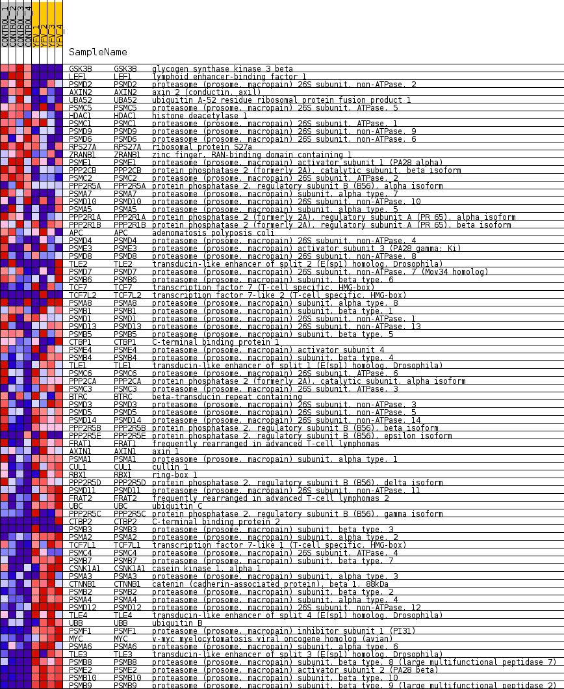
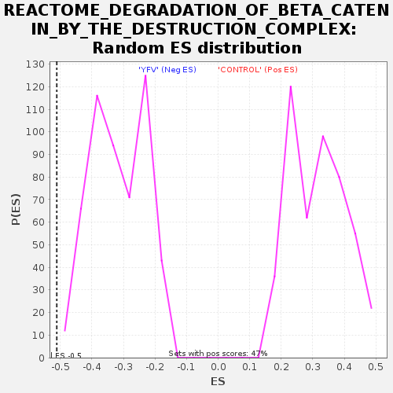

Profile of the Running ES Score & Positions of GeneSet Members on the Rank Ordered List
| Dataset | MATRIZ_GSE99081_collapsed_to_symbols.gsea_CLASE_99081.cls#CONTROL_versus_YFV |
| Phenotype | gsea_CLASE_99081.cls#CONTROL_versus_YFV |
| Upregulated in class | YFV |
| GeneSet | REACTOME_DEGRADATION_OF_BETA_CATENIN_BY_THE_DESTRUCTION_COMPLEX |
| Enrichment Score (ES) | -0.51131165 |
| Normalized Enrichment Score (NES) | -1.5997833 |
| Nominal p-value | 0.0 |
| FDR q-value | 0.06874684 |
| FWER p-Value | 0.893 |
| SYMBOL | TITLE | RANK IN GENE LIST | RANK METRIC SCORE | RUNNING ES | CORE ENRICHMENT | |
|---|---|---|---|---|---|---|
| 1 | GSK3B | glycogen synthase kinase 3 beta | 1 | 2.741 | 0.0721 | No |
| 2 | LEF1 | lymphoid enhancer-binding factor 1 | 84 | 1.339 | 0.1023 | No |
| 3 | PSMD2 | proteasome (prosome, macropain) 26S subunit, non-ATPase, 2 | 711 | 0.738 | 0.0830 | No |
| 4 | AXIN2 | axin 2 (conductin, axil) | 1436 | 0.543 | 0.0525 | No |
| 5 | UBA52 | ubiquitin A-52 residue ribosomal protein fusion product 1 | 1969 | 0.488 | 0.0324 | No |
| 6 | PSMC5 | proteasome (prosome, macropain) 26S subunit, ATPase, 5 | 3127 | 0.329 | -0.0305 | No |
| 7 | HDAC1 | histone deacetylase 1 | 3484 | 0.291 | -0.0449 | No |
| 8 | PSMC1 | proteasome (prosome, macropain) 26S subunit, ATPase, 1 | 3697 | 0.267 | -0.0510 | No |
| 9 | PSMD9 | proteasome (prosome, macropain) 26S subunit, non-ATPase, 9 | 3732 | 0.263 | -0.0461 | No |
| 10 | PSMD6 | proteasome (prosome, macropain) 26S subunit, non-ATPase, 6 | 3986 | 0.243 | -0.0554 | No |
| 11 | RPS27A | ribosomal protein S27a | 4134 | 0.232 | -0.0584 | No |
| 12 | ZRANB1 | zinc finger, RAN-binding domain containing 1 | 4137 | 0.231 | -0.0524 | No |
| 13 | PSME1 | proteasome (prosome, macropain) activator subunit 1 (PA28 alpha) | 4391 | 0.212 | -0.0625 | No |
| 14 | PPP2CB | protein phosphatase 2 (formerly 2A), catalytic subunit, beta isoform | 4683 | 0.184 | -0.0756 | No |
| 15 | PSMC2 | proteasome (prosome, macropain) 26S subunit, ATPase, 2 | 4826 | 0.173 | -0.0799 | No |
| 16 | PPP2R5A | protein phosphatase 2, regulatory subunit B (B56), alpha isoform | 4884 | 0.167 | -0.0790 | No |
| 17 | PSMA7 | proteasome (prosome, macropain) subunit, alpha type, 7 | 5238 | 0.134 | -0.0973 | No |
| 18 | PSMD10 | proteasome (prosome, macropain) 26S subunit, non-ATPase, 10 | 5332 | 0.127 | -0.0997 | No |
| 19 | PSMA5 | proteasome (prosome, macropain) subunit, alpha type, 5 | 5659 | 0.102 | -0.1172 | No |
| 20 | PPP2R1A | protein phosphatase 2 (formerly 2A), regulatory subunit A (PR 65), alpha isoform | 5796 | 0.091 | -0.1232 | No |
| 21 | PPP2R1B | protein phosphatase 2 (formerly 2A), regulatory subunit A (PR 65), beta isoform | 5866 | 0.087 | -0.1252 | No |
| 22 | APC | adenomatosis polyposis coli | 5964 | 0.079 | -0.1291 | No |
| 23 | PSMD4 | proteasome (prosome, macropain) 26S subunit, non-ATPase, 4 | 6348 | 0.049 | -0.1515 | No |
| 24 | PSME3 | proteasome (prosome, macropain) activator subunit 3 (PA28 gamma; Ki) | 6661 | 0.029 | -0.1701 | No |
| 25 | PSMD8 | proteasome (prosome, macropain) 26S subunit, non-ATPase, 8 | 6710 | 0.026 | -0.1724 | No |
| 26 | TLE2 | transducin-like enhancer of split 2 (E(sp1) homolog, Drosophila) | 6841 | 0.019 | -0.1799 | No |
| 27 | PSMD7 | proteasome (prosome, macropain) 26S subunit, non-ATPase, 7 (Mov34 homolog) | 6854 | 0.018 | -0.1802 | No |
| 28 | PSMB6 | proteasome (prosome, macropain) subunit, beta type, 6 | 7048 | 0.008 | -0.1919 | No |
| 29 | TCF7 | transcription factor 7 (T-cell specific, HMG-box) | 9299 | -0.000 | -0.3312 | No |
| 30 | TCF7L2 | transcription factor 7-like 2 (T-cell specific, HMG-box) | 9332 | -0.000 | -0.3331 | No |
| 31 | PSMA8 | proteasome (prosome, macropain) subunit, alpha type, 8 | 9584 | -0.007 | -0.3485 | No |
| 32 | PSMB1 | proteasome (prosome, macropain) subunit, beta type, 1 | 9745 | -0.014 | -0.3580 | No |
| 33 | PSMD1 | proteasome (prosome, macropain) 26S subunit, non-ATPase, 1 | 10102 | -0.030 | -0.3793 | No |
| 34 | PSMD13 | proteasome (prosome, macropain) 26S subunit, non-ATPase, 13 | 10422 | -0.053 | -0.3976 | No |
| 35 | PSMB5 | proteasome (prosome, macropain) subunit, beta type, 5 | 10473 | -0.058 | -0.3992 | No |
| 36 | CTBP1 | C-terminal binding protein 1 | 10689 | -0.074 | -0.4105 | No |
| 37 | PSME4 | proteasome (prosome, macropain) activator subunit 4 | 10799 | -0.085 | -0.4150 | No |
| 38 | PSMB4 | proteasome (prosome, macropain) subunit, beta type, 4 | 10839 | -0.088 | -0.4151 | No |
| 39 | TLE1 | transducin-like enhancer of split 1 (E(sp1) homolog, Drosophila) | 10991 | -0.101 | -0.4218 | No |
| 40 | PSMC6 | proteasome (prosome, macropain) 26S subunit, ATPase, 6 | 11010 | -0.102 | -0.4202 | No |
| 41 | PPP2CA | protein phosphatase 2 (formerly 2A), catalytic subunit, alpha isoform | 11059 | -0.106 | -0.4204 | No |
| 42 | PSMC3 | proteasome (prosome, macropain) 26S subunit, ATPase, 3 | 11528 | -0.149 | -0.4454 | No |
| 43 | BTRC | beta-transducin repeat containing | 11766 | -0.171 | -0.4556 | No |
| 44 | PSMD3 | proteasome (prosome, macropain) 26S subunit, non-ATPase, 3 | 11846 | -0.178 | -0.4558 | No |
| 45 | PSMD5 | proteasome (prosome, macropain) 26S subunit, non-ATPase, 5 | 11911 | -0.185 | -0.4549 | No |
| 46 | PSMD14 | proteasome (prosome, macropain) 26S subunit, non-ATPase, 14 | 11924 | -0.186 | -0.4507 | No |
| 47 | PPP2R5B | protein phosphatase 2, regulatory subunit B (B56), beta isoform | 12374 | -0.231 | -0.4724 | No |
| 48 | PPP2R5E | protein phosphatase 2, regulatory subunit B (B56), epsilon isoform | 12398 | -0.233 | -0.4677 | No |
| 49 | FRAT1 | frequently rearranged in advanced T-cell lymphomas | 12760 | -0.272 | -0.4829 | No |
| 50 | AXIN1 | axin 1 | 12774 | -0.274 | -0.4765 | No |
| 51 | PSMA1 | proteasome (prosome, macropain) subunit, alpha type, 1 | 12891 | -0.287 | -0.4761 | No |
| 52 | CUL1 | cullin 1 | 12992 | -0.300 | -0.4744 | No |
| 53 | RBX1 | ring-box 1 | 13011 | -0.302 | -0.4676 | No |
| 54 | PPP2R5D | protein phosphatase 2, regulatory subunit B (B56), delta isoform | 13082 | -0.311 | -0.4637 | No |
| 55 | PSMD11 | proteasome (prosome, macropain) 26S subunit, non-ATPase, 11 | 13564 | -0.374 | -0.4836 | No |
| 56 | FRAT2 | frequently rearranged in advanced T-cell lymphomas 2 | 13719 | -0.397 | -0.4827 | No |
| 57 | UBC | ubiquitin C | 14182 | -0.479 | -0.4987 | Yes |
| 58 | PPP2R5C | protein phosphatase 2, regulatory subunit B (B56), gamma isoform | 14264 | -0.495 | -0.4907 | Yes |
| 59 | CTBP2 | C-terminal binding protein 2 | 14281 | -0.497 | -0.4786 | Yes |
| 60 | PSMB3 | proteasome (prosome, macropain) subunit, beta type, 3 | 14438 | -0.500 | -0.4751 | Yes |
| 61 | PSMA2 | proteasome (prosome, macropain) subunit, alpha type, 2 | 14672 | -0.535 | -0.4754 | Yes |
| 62 | TCF7L1 | transcription factor 7-like 1 (T-cell specific, HMG-box) | 14713 | -0.544 | -0.4635 | Yes |
| 63 | PSMC4 | proteasome (prosome, macropain) 26S subunit, ATPase, 4 | 14766 | -0.557 | -0.4521 | Yes |
| 64 | PSMB7 | proteasome (prosome, macropain) subunit, beta type, 7 | 14794 | -0.565 | -0.4389 | Yes |
| 65 | CSNK1A1 | casein kinase 1, alpha 1 | 14932 | -0.603 | -0.4315 | Yes |
| 66 | PSMA3 | proteasome (prosome, macropain) subunit, alpha type, 3 | 14958 | -0.609 | -0.4170 | Yes |
| 67 | CTNNB1 | catenin (cadherin-associated protein), beta 1, 88kDa | 15058 | -0.642 | -0.4062 | Yes |
| 68 | PSMB2 | proteasome (prosome, macropain) subunit, beta type, 2 | 15120 | -0.662 | -0.3926 | Yes |
| 69 | PSMA4 | proteasome (prosome, macropain) subunit, alpha type, 4 | 15508 | -0.833 | -0.3946 | Yes |
| 70 | PSMD12 | proteasome (prosome, macropain) 26S subunit, non-ATPase, 12 | 15525 | -0.844 | -0.3733 | Yes |
| 71 | TLE4 | transducin-like enhancer of split 4 (E(sp1) homolog, Drosophila) | 15596 | -0.871 | -0.3547 | Yes |
| 72 | UBB | ubiquitin B | 15642 | -0.918 | -0.3334 | Yes |
| 73 | PSMF1 | proteasome (prosome, macropain) inhibitor subunit 1 (PI31) | 15701 | -0.986 | -0.3110 | Yes |
| 74 | MYC | v-myc myelocytomatosis viral oncogene homolog (avian) | 15733 | -1.017 | -0.2861 | Yes |
| 75 | PSMA6 | proteasome (prosome, macropain) subunit, alpha type, 6 | 15762 | -1.053 | -0.2601 | Yes |
| 76 | TLE3 | transducin-like enhancer of split 3 (E(sp1) homolog, Drosophila) | 15801 | -1.121 | -0.2330 | Yes |
| 77 | PSMB8 | proteasome (prosome, macropain) subunit, beta type, 8 (large multifunctional peptidase 7) | 16014 | -1.655 | -0.2025 | Yes |
| 78 | PSME2 | proteasome (prosome, macropain) activator subunit 2 (PA28 beta) | 16061 | -1.905 | -0.1552 | Yes |
| 79 | PSMB10 | proteasome (prosome, macropain) subunit, beta type, 10 | 16150 | -2.694 | -0.0897 | Yes |
| 80 | PSMB9 | proteasome (prosome, macropain) subunit, beta type, 9 (large multifunctional peptidase 2) | 16195 | -3.614 | 0.0027 | Yes |

